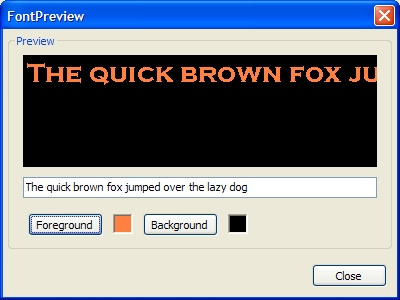

UDN
Search public documentation:
ImportingFonts
日本語訳
中国翻译
한국어
Interested in the Unreal Engine?
Visit the Unreal Technology site.
Looking for jobs and company info?
Check out the Epic games site.
Questions about support via UDN?
Contact the UDN Staff
中国翻译
한국어
Interested in the Unreal Engine?
Visit the Unreal Technology site.
Looking for jobs and company info?
Check out the Epic games site.
Questions about support via UDN?
Contact the UDN Staff
UE3 Home > Materials & Textures > Creating and Importing Fonts
UE3 Home > User Interfaces & HUDs > Creating and Importing Fonts
UE3 Home > User Interfaces & HUDs > Creating and Importing Fonts
Creating and Importing Fonts
Overview
Step 1 - Create a new asset
Step 2 - Select the font you are importing
Step 3 - Set the character-set properties
| Property | Description |
| USize | The width of the generated textures in pixels |
| VSize | The height of the generated textures in pixles |
| XPad | The amount of space between characters in pixels on the X axis |
| YPad | The amount of space between characters in pixels on the Y axis |
| AntiAlias | Whether to enable anti-aliasing of the generated texture data or not |
| Chars | Used to specify which characters are to be generated for the font. Useful if you aren't generating a complete font, or you wish to control which characters are used. |
| Wildcard | Used in conjunction with Path. Specifies the pattern to use when selecting files from a given directory |
| Path | Used to specify one or more files as the set of characters to include in the font. Useful if you are generating a font for localization and only want the characters that are needed to be in the font; then you'd specify the localization file(s) to use and it generates only the needed characters |
| Style | Specifies the number of inked pixels per thousand. Use 400 for normal and 700 for bold |
| Italic | Whether to create the font using italics or not |
| Underline | Whether to create the font with underlining enabled or not |
| bCreatePrintableOnly | Whether to remove non-printable characters from the font or not. Saves space as control characters are stripped from the font |
| bUseSymbolCharSet | Whether to import the font as a set of symbols or a set of characters |
| ExtendBox | The amount to push the texture UV's per character in pixels |
Wildcards
The Wildcard text file is the file that contains the characters, and is the thing you point the importer to, so it reads the contents and imports only the characters contained within the file, while the FilePath is simply a path pointing to the directory the text file (wildcard) is in. In order to use this, the character file path and wildcard should look likeCharacterFilePath=C:\FileName\FileName CharacterFileWildcard=YourTextFile.txtThe actual path to the text file in windows should be:
C:\FileName\FileName\YourTextFile.txtHere are the steps for importing and setting up properties:
- Create a folder named
C:\FontPathand place a text file calledFontChars.txtin the folder. - Paste in the wildcard character text into the FontChars.txt text file.
- Save the FontChars.txt text file as UNICODE (using Windows NotePad, for example).
- Open UnrealEd, right click in the Generic Browser, select New Font Imported from TrueType.
- Set
FontNameto something such as Arial Unicode MS. - Set the following properties:
-
bCreatePrintableOnlyto true -
CharsFilePathto C:\FontPath -
CharsFilePathto C:\FontPath -
TexturePageMaxHeight= # -
TexturePageWidth= # - set any padding/extend box values
-
- Choose font + size
- Import
bCreatePrintableOnly flag, along with the filepath & wildcard. You may experience problems where the characters will not import properly that checkbox is not set properly.
NOTE: The Character File Path must be used in addition to the Wildcard input. The File path should not include the filename, just the path to the file. Also make sure that the text file that containing the UNICODE characters you want imported is saved as UNICODE. The file should have a 0xfffe header, otherwise it may silently fail. Font character files saved in UTF-8 format are not supported right now.
Wildcard Examples
Here's a general-purpose list of characters. The spaces at the front of the lines are intentional. One is a normal space, one is for French. English:
!"#$%&'()*+,-./0123456789:;<=>?@ABCDEFGHIJKLMNOPQRSTUVWXYZ[\]^_`abcdefghijklmnopqrstuvwxyz{|}~
Extended:
€„ˆ‹Œ‘’“”–—˜™›œ¡¢£¨©ª«®°²³´¹º»¿ÀÁÂÃÄÅÆÇÈÉÊËÌÍÎÏÑÒÓÔÕÖØÙÚÛÜßàáâãäåæçèéêëìíîïñòóôõöøùúûüýÝ¥§Ÿ…Using the wildcard will ensure that every character you want to import, does, if the font supports it. If you're still missing the ellipse character after importing with the above characters, it may not exist in the TTF file.
Extendbox
If theExtendBox number is super high, it can cause extra characters to draw, or if you're experiencing clipping with italic fonts, you can use it to fix that. ExtendBox is different from Padding (X or Y), Padding spaces the characters on the texture sheet based on the number you input, while ExtendBox only moves the 2D UV coordinates for the characters.
You'll generally want to add some padding when using ExtendBox, so you don't have half of a d character rendering when the e character is used.
In some cases, you may notice certain lowercase characters and special characters such as - are placed all the way up to the cap line instead of being placed on the baseline. The character positions on the actual texture is intentional, and will not appear like that in-game. It is an optimization to save overall texture usage when importing fonts, and only exists on the texture itself.
Regarding kerning, you can set a default kerning value for the font, but not the leading in the actual font itself.
Be careful with externally adjusting the texture based on the current import. The UV's will not change if you alter the texture, and as a result will have cut off textures and even more problems. Instead, reimport the fonts and check the bEnableLegacyMode checkbox, which will import the characters with similar baselines (as it was previously in the engine).
Font Properties
Modifying an Existing Font
Once the font pages have been generated, you can modify them. Sometimes during the font generation, a character will extend outside the allotted space or some stray pixels will be added. In these cases, the artist can export the font pages to clean them up in a paint program. Use the font properties dialog to export and/or import font pages. First select the font page you want to export. After using the Export button, you navigate to the directory the font page is exported to. The export/import process uses a strict naming scheme which is: FontName_Page_#.tga The update process uses the name to determine which page to replace, so do not change the file name for the font page. Update imports a single file as a replacement for the selected font page. The Update All option scans a directory for TGA files that match the naming scheme. Those files are automatically imported replacing the existing font pages. The Export option exports the selected font page to a TGA file using the naming scheme shown above. Export All exports all of the font pages to the specified directory using the naming scheme described above.Font Preview
To see how a font the looks inside UE3, use the "Preview" button on the font properties dialog. This, in turn, shows the font preview dialog seen below. This dialog renders the text using the same code as in game, allowing you to check for spacing problems without having to run the game. During a localization pass, this speeds up iteration time. As you enter text in the edit control, it is drawn in the preview area. You can change the color of the text and the background to verify that the font looks good in variety of settings. Linespacing
You are able to space your fonts horizontally and vertically in a UI combo and/or Text style. Change the style to use "custom," and in the mid-left area there is a section called "Chars." You can edit the Kerning and line height there. Additionally, you can override the style on a per-widget, per-scene basis if you need it. In the widget's properties, under Components -> StringRenderComponent, StyleOverride, check the box next to "Spacing Adjust," and you can alter the numbers in those fields. Using the Style Override will only affect that widget, and will always affect that widget.Eastern Language Fonts (Asian and Arabic)
- Select New Font Imported From TrueType
- In the New Font dialog, use the default settings AntiAlias and LODGroup to UI Texture Group
22-39,127-514,654-819'For the font-swap, you'll need to create another package for your Asian fonts: "Fonts_JPN," "Fonts_KOR," etc. Inside that package, the font names need to match exactly with your main font package. When the language is changed to Japanese, it should also change the default font package. The main concern with this is making sure these two packages are identical, except for the textures contained within the font object. For example, if your font was named "Mainfont," the packages would be set up as follows:
Fonts.Mainfont Fonts_JPN.Mainfont Etc.When the default font package is changed to the _JPN one, all styles will use that 'Mainfont' instead of the other package, and vice versa for Western character sets (the Japanese will not be loaded in English). The size of the fonts largely depend on how much dialogue/text in game and how much of the character set should be accessible to the user. Using the above mentioned method of importing based on your game text, this could be very minimal, or massive, depending on if there are computer terminal interfaces that require or allow user input or tons of dialogue. For comparison, the Gears 1 JPN font package was around 5.5mb (largest type sizes being 1-1.3mb). Depending on how many levels are in your multifont, you might be able to get away with it; but it will be somewhat heavy in file size. You may experience some visual oddities between versions if you're using Multifonts for one language and not for the others that wouldn't be apparent otherwise. If you license an Asian font they may be shipped with two font formats - one that may be prefixed with an @ symbol, the may not. The @ symbol is probably the one you may be inclined to import the font as, and this will put it at the top of the list making it the easiest to pick out. However, the @ version is used for vertical text output. Characters are rotated 90 degrees in one direction because the actual text displays they are meant for are rotated 90 degrees in the other direction making a font that stacks:
L I K E T H I STraditionally, that's how Asian languages are meant to be read - top to bottom (and right to left). What you will need is the left to right version, which should be easily found if you search for the font name without the @ prefix.
MultiFonts
ResTests and ResHeights arrays. Both arrays should contain the same number of values. Each ResTests element is the closest vertical display resolution where the character set of the corresponding ResHeights height will be used.
For example, to import an MultiFont that supports three resolutions:
ResTests[0] = 480.0 ResHeights[0] = 16 ResTests[1] = 720.0 ResHeights[1] = 24 ResTests[2] = 1080.0 ResHeights[2] = 32Now, when the game is running at 1280x720, the engine will automatically render using the character bitmaps that were baked out at point size 24. Note that we only look at the vertical screen resolution when deciding which glyph set to use. Also, if you use a point size value that's too large for your texture size, you'll probably get a memory/overrun crash, so be careful to use reasonable point size values.
Custom Fonts
bEnableLegacyMode checkbox, which will import the characters with similar baselines (as it was previously in the engine).
Console Buttons as Fonts
For Xbox, Microsoft has a True Type Font for this; and with some prodding they should be able to get it for you. In Gears of War the A/B/X/Y, triggers, etc. buttons were made custom, and replaced into the exported font sheet. You can go about it one of two ways... Don't change any coordinates, and fit your art to the size of the font you import. This may take a few imports to get the size right to match pixels to the point sizes. Once you export your TGA from the editor, open it up in PhotoShop, and start placing the images roughly where they should go. Sometimes there is a bit of back-and-forth to make the art fit within the UV bounds. To find the coordinates, you can open the properties of the font and view the character list. It's a list of ASCII values, with UV's assigned to each one. Here is a reference: There are more complete ones out there that show accented characters, too.
You can input the UV's into a PhotoShop Slice, and see if the characters are right; if not you can add a new slice and try a different set of UV's based on how far off the previous one was.
The controller button font in Gears was pretty much un-altered UV wise. The art was fit onto the texture based on the sizes of the imported UVs.
You could also make a completely custom font, which is a little more involved, and requires manually inputting the UV's into the property window after a new import. The "game over" font in Gears was created this way – the letters (GoW logo type) were created by hand in PhotoShop, and assembled into a texture. The UV's were altered after a fresh font import so they would work properly. In Gears, this was imported as a 55-75pt font, so that the import heights were somewhat similar to the size of the art it was being changed to.
If you do alter the UV's be sure to keep the heights consistent, otherwise you will run into baseline issues and headaches. After typing in a new value, be sure to press
There are more complete ones out there that show accented characters, too.
You can input the UV's into a PhotoShop Slice, and see if the characters are right; if not you can add a new slice and try a different set of UV's based on how far off the previous one was.
The controller button font in Gears was pretty much un-altered UV wise. The art was fit onto the texture based on the sizes of the imported UVs.
You could also make a completely custom font, which is a little more involved, and requires manually inputting the UV's into the property window after a new import. The "game over" font in Gears was created this way – the letters (GoW logo type) were created by hand in PhotoShop, and assembled into a texture. The UV's were altered after a fresh font import so they would work properly. In Gears, this was imported as a 55-75pt font, so that the import heights were somewhat similar to the size of the art it was being changed to.
If you do alter the UV's be sure to keep the heights consistent, otherwise you will run into baseline issues and headaches. After typing in a new value, be sure to press ENTER, and then click into another input field to make sure the value takes.
During the import process, it may also be handy to increase the X and Y padding to give you a little more room to play with, but just be careful to keep all heights the same between characters, otherwise clipping will occur.